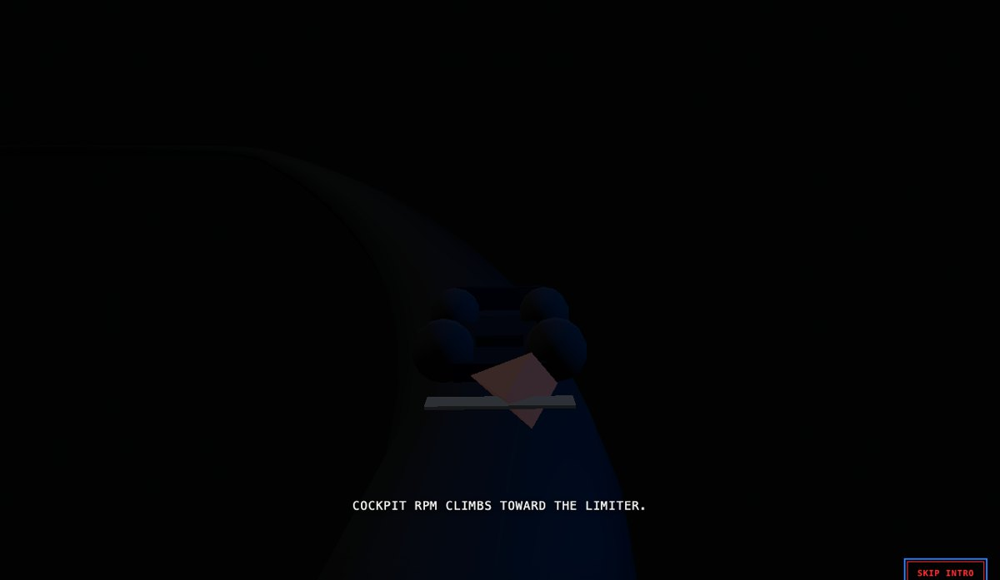
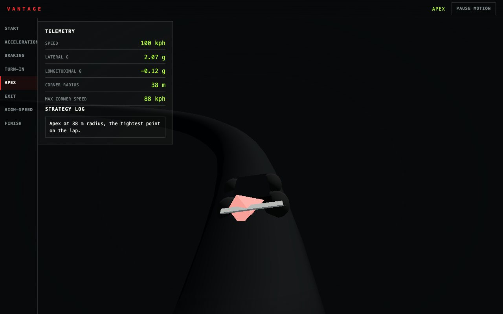

Blender · three.js · motion design · 2026-10
What Happens When the Camera Loop Only Fires Twice?
A motorsport telemetry and vehicle-dynamics experience: one real (simplified) circular-motion formula drives the lap's speed, lateral g and longitudinal g, the chase camera's position, and its field of view, from a single track-progress value, and three real rendering bugs (scale, a missing Suspense boundary, a camera lerp that a throttled headless test loop could never finish) were found by actually looking at the screenshots.

Built from blueprint 10 of a written build book (Advanced Engineering Build Book, Volume VIII) as one vertical slice, using the five-tool-design-pipeline skill: an Awesome Design file for type/spacing scale, the Taste/Impeccable checklist, Playwright including a pixel-sample check that the car actually moves, Three.js as the product. Everything is synthetic: the lap log and the track layout come from a seeded generator and a hand-authored waypoint list, not a real car's telemetry. Not built: drivable controls, a multi-car field, a real telemetry feed, auth.
01 — The problem
The book's brief asks for a one-lap experience where speed and g-forces read as real vehicle dynamics, not arbitrary numbers, and where the opening cinematic (ignition, launch, a braking-zone time-slow, the circuit line becoming the telemetry UI) hands off cleanly into a scroll-driven HUD. That means the car, the camera and the readout all have to agree about where the car is on the track at every instant, not just the readout.
02 — What I built
One repository with the whole pipeline.
- A scripted asset:
model/build.pybuilds a low-poly race car and a standalone tire, exports GLBs, renders a poster. - A domain model: real circular-motion formulas (
v = sqrt(mu * g * r)for max cornering speed,v^2 / (r * g)for lateral g) evaluated against a hand-authored eight-section track (radius and entry/exit speed per section), pure and unit-tested. - A browser runtime where the car follows a closed Catmull-Rom curve built from the same track waypoints, a chase camera reads the identical curve and the identical
speedKphAtfunction for its field of view, and the HUD reads the same three functions for its readout, so nothing can show a different lap than the numbers describe. - An intro that climbs the RPM, launches through a tunnel, slows time in a braking zone, rises the camera, and hands off through a light mask.
- Fallbacks: poster for no WebGL, static keyframes for reduced motion.
03 — How it was built
- 01
A scale bug: a flat multiplier instead of the scene's own unit
The scene converts meters to scene units with
U = 1/40, applied to the track waypoints. The loaded car GLB, built in real Blender meters, was first scaled by a leftover flat0.5instead ofU, so the car rendered about 20x too large: a dark, nearly motionless wall filling the frame regardless of which lap section was selected.// wrong: a flat guess <group ref={ref} scale={0.5}><primitive object={scene} /></group> // right: match the scene's own unit convention <group ref={ref} scale={U}><primitive object={scene} /></group> - 02
A missing Suspense boundary hid the car with no error
useLoader(GLTFLoader, ...)suspends via React Suspense. With no<Suspense>around the car, its meshes still mounted into the Three.js scene graph (draw-call counts looked correct, 10 geometries as expected), but the per-frame position update never ran before the boundary resolved: the car sat frozen at the track's origin point no matter which section the HUD showed. No console error, no failed test, just a car that silently never moved. Wrapping it in<Suspense fallback={null}>fixed it. - 03
A camera lerp that could never finish in the test environment
The chase camera originally eased toward its target with an exponential lerp driven by
useFrame'sdt. Instrumenting the render loop showed the headless Playwright/SwiftShader session producing as few as two actual animation frames across several real seconds, so a lerp tuned for continuous 60 fps motion never converged within any wait the test suite could afford. A real browser session renders continuously and would never hit this, but the fix removes the dependency entirely: the camera now snaps straight to its computed position and look-at target every frame, simpler code with one less thing that can desync from reality.
04 — Results
Apex, the tightest corner on the lap:

Checks. 14 unit and API tests, 19 Playwright tests including a car-actually-moves pixel-sample check, clean typecheck.
Performance, SwiftShader (no GPU claim). 10 draw calls for the whole scene (the track tube, the car's nine meshes), 2,822 triangles, 564 KB gzipped JS. Median 16.7 ms per frame.
05 — What I'd do next
- Measure on a physical GPU and a mid-range phone.
- Add a bounding-box sanity check and a canvas-pixels-change-over-real-time smoke test, so a scale bug or a frozen camera like these fail automatically instead of needing a manual screenshot comparison.
- A second car and a simple overtake, for the book's implied multi-car race strategy angle.